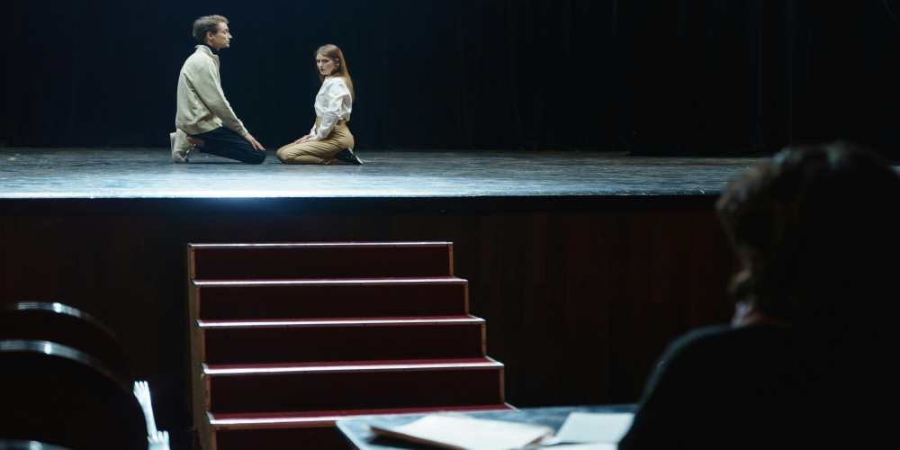

Teatro
Duración: 4 semanas (Lunes a Viernes, 10:00 a 14:00 h)
Edad recomendada: A partir de 15 años
Modalidad: Presencial
Muestra final: Presentación escénica de escenas trabajadas durante el curso
🔹 Semana 1: Introducción al Teatro y el Trabajo Escénico
Objetivo: Crear un grupo de trabajo sólido, despertar la conciencia corporal y vocal, y sentar las bases actorales.
Dinámicas grupales e integración
Entrenamiento vocal y corporal básico
Ejercicios de improvisación libre
Exploración de emociones y expresión escénica
Introducción al análisis de textos teatrales
🔹 Semana 2: Construcción de Personaje y Técnica Dramática
Objetivo: Desarrollar personajes con profundidad emocional y técnica actoral consciente.
Taller de emociones: cómo sentir y mostrar con verdad
Trabajo sobre motivaciones, objetivos y conflictos del personaje
Improvisaciones dirigidas a partir de situaciones dramáticas
Asignación de escenas (clásicas o contemporáneas) para ensayo
Lectura dramatizada y análisis en grupo
🔹 Semana 3: Ensayos y Montaje Escénico
Objetivo: Ensayar con intención escénica, ritmo y trabajo colectivo hacia la presentación final.
Ensayos parciales con retroalimentación del docente
Trabajo sobre ritmo, pausas, silencios y energía escénica
Construcción de escenografía mínima y utilería
Introducción a iluminación y ambientación simbólica
Prácticas con voz proyectada en el espacio escénico
🔹 Semana 4: Pulido Final y Presentación
Objetivo: Consolidar todo lo aprendido y presentar el trabajo frente a público.
Ensayos generales con escenografía y vestuario
Dirección escénica: entradas, salidas y transiciones
Retroalimentación individual y grupal
Presentación abierta al público (familiares, amigos, comunidad)
Cierre del curso y entrega de constancias
✅ Materiales y Requisitos:
Ropa cómoda para trabajo físico
Cuaderno y pluma para apuntes y reflexiones
Textos teatrales (proporcionados por el curso o elegidos en grupo)
Ganas de explorar, arriesgarse y trabajar en equipo

Danza folclorica
Duración: 4 semanas (Lunes a Viernes, 10:00 a 14:00 h)
Edad recomendada: A partir de 15 años
Modalidad: Presencial
Muestra final: Presentación escénica de cuadros folclóricos trabajados durante el curso
🔹 Semana 1: Introducción a la Danza Folclórica y Técnica Corporal
Objetivo: Crear cohesión grupal, despertar conciencia corporal y sentar las bases técnicas del folclor mexicano.
Dinámicas grupales e integración
Historia breve y diversidad de la danza folclórica en México
Entrenamiento corporal básico: postura, alineación y resistencia
Fundamentos técnicos: zapateado, floreo de falda, desplazamientos
Ejercicios de ritmo y coordinación con música
🔹 Semana 2: Repertorio Regional y Construcción Escénica
Objetivo: Conocer y ensayar danzas representativas de distintas regiones del país, trabajando elementos técnicos y expresivos.
Estudio de dos regiones folclóricas (Ej. Jalisco y Veracruz)
Práctica de zapateados, figuras coreográficas y movimientos característicos
Exploración de uso de vestuario y accesorios tradicionales
Composición escénica: entradas, transiciones y desplazamientos en grupo
Asignación de cuadros coreográficos para presentación
🔹 Semana 3: Ensayos y Montaje Coreográfico
Objetivo: Ensayar con intención escénica, ritmo y trabajo colectivo hacia la muestra final.
Ensayos parciales de cuadros seleccionados con retroalimentación
Ensamble con música en vivo o grabada
Práctica con elementos escénicos: pañuelos, sombreros, rebozos, machetes (según región)
Prácticas de grupo: sincronía, presencia escénica y vestuario en movimiento
Pruebas de escenografía, ambientación y utilería mínima
🔹 Semana 4: Ensayos Generales y Muestra Escénica
Objetivo: Integrar lo aprendido y presentarlo frente a un público real.
Ensayos generales con vestuario completo y elementos escénicos
Coordinación de entradas, salidas, transiciones y cambios de vestuario
Práctica de saludo tradicional y protocolo escénico
Presentación pública de cuadros folclóricos (familiares, amigos y comunidad)
Cierre del curso, entrega de reconocimientos y convivencia
✅ Materiales y Requisitos:
Ropa cómoda para ensayo (mallones, pants, camiseta)
Zapatos de danza folclórica o suela dura
Falda amplia (para mujeres)
Accesorios (pañuelo, sombrero, rebozo) — proporcionados o indicados
Botella de agua, toalla y cuaderno personal